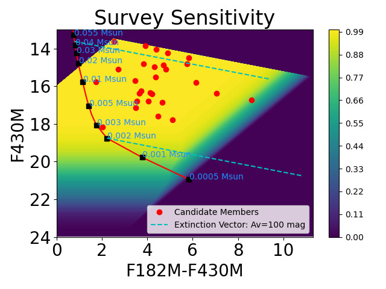

![ Fig. 2.Completeness across the field of view of our NIRCam data in the F182M and F430M filters. Color bar shows the fractional area where we are sensitive to the specific color–magnitude combination. The purple background indicates no sensitivity, either due to saturation or being below our detection limit. Red line is a 1 Myr isochrone from the ATMO2020 chemical equilibrium models, cyan dashed lines are extinction vectors, and red circles are the likely cluster members. While we are sensitive to 0.5 Jupiter mass objects, we only identified one 3 Jupiter mass object as a likely cluster member.](images/isochrone_NGC2024.png){kind=link}

The first identification of a turnover in the initial mass function within a stellar population, NGC 2024. See link for NASA Press Release.
I led JWST GTO-1190 as a part of the NIRCam Science team to characterize the initial mass function (IMF) in NGC2024, a nearby (~ 400 pc) young (0.5 Myr) star-forming region. With deep NIRCam imaging in eight filters across 0.7-5 microns, we identified 48 likely cluster members that are all sub-stellar. I created an automated point source detection technique that distinguishes point sources from extended, nebular emission, which most modern point source detection algorithms are unable to perform. Then, we determined cluster membership by comparing the observed photometry to that of a simulated Galactic field population assuming a local extinction estimate from archival Herschel data. From these observations, we were sensitive to objects of 0.5 Jupiter masses and 1 Jupiter mass through 30 magnitudes of visual extinction. From the likely cluster members, we found that a double power law function is strongly favored over any other model with an increasing mass function in linear space down to ~ 12 Jupiter masses, then a decreasing mass functino down to our sensitivity limit of 0.5 Jupiter masses. This is the first identification of a turnover in the mass function in any stellar population to date. We find no likely cluster members below 3 Jupiter masses, although we are sensitive to lower masses. While a small sample, our results demonstrate that the mass function does not continue to increase down to smaller masses, but turns over toward the opacity limit of fragmentation (still an unknown quantity). We were awarded JWST Cycle 3 (GO 5409, PI: De Furio) time with NIRSpec/MSA to obtain 0.6-5.3 micron spectroscopy of the observed sources in NGC 2024. In the same program, we obtained NIRCam parallel imaging in the periphery of NGC 2024 to explore intra-cluster differences in the mass function, e.g. do high mass stars in the core of NGC 2024 inhibit the production of low mass objects down to the opacity limit of fragmentation. See this link for the NASA press release, and this link a> for the ApJL publication.

The first identification of a turnover in the initial mass function within a stellar population, NGC 2024. See link for NASA Press Release.

Detection of the second Y-Y dwarf binary system ever, WISE1935-1546, using JWST/MIRI probing the lowest mass binaries in the Galaxy. See link for paper.

Resolving companions below the diffraction limit with HST WFC3/IR. See link for paper.
For inquiries about collaborations, details about my research and outreach, or general questions, please reach out to me through email.